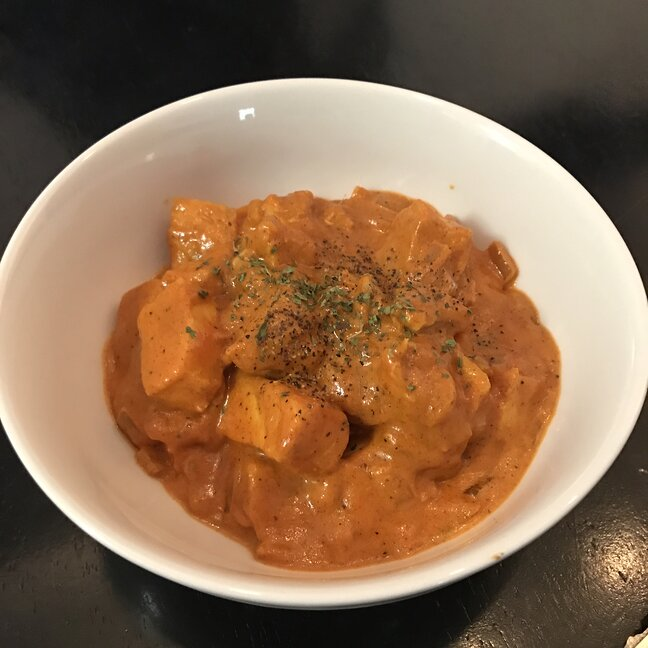

Chicken Tikka Masala

A classic curry-stand recipe. This is not haute cuisine;
this is the kind of nuclear-orange tikka masala that you
crave when you stumble out of a pub at 2 a.m. I make vast
quantities of the sauce at one time, and it freezes very
well. I also added much more cayenne pepper than 1 teaspoon,
but I give out the recipe like this for people who don't like
heat.
Ingredients
2 tablespoons ghee (clarified butter)
1 onion, finely chopped
4 cloves garlic, minced
1 tablespoon ground cumin
1 teaspoon salt (Optional)
1 teaspoon ground ginger
1 teaspoon cayenne pepper
½ teaspoon ground cinnamon
¼ teaspoon ground turmeric
1 (14 ounce) can tomato sauce
1 cup heavy whipping cream
2 teaspoons paprika
1 tablespoon white sugar (Optional)
1 tablespoon vegetable oil
4 skinless, boneless chicken breast halves, cut into bite-size pieces
½ teaspoon curry powder
½ teaspoon salt, or to taste (Optional)
1 teaspoon white sugar, or to taste (Optional)
Method
- Heat ghee in a large skillet over medium heat and cook and stir onion until translucent, about 5 minutes. Stir in garlic; cook and stir just until fragrant, about 1 minute. Stir cumin, 1 teaspoon salt, ginger, cayenne pepper, cinnamon, and turmeric into the onion mixture; fry until fragrant, about 2 minutes.
- Stir tomato sauce into the onion and spice mixture, bring to a boil, and reduce heat to low. Simmer sauce for 10 minutes, then mix in cream, paprika, and 1 tablespoon sugar. Bring sauce back to a simmer and cook, stirring often, until sauce is thickened, 10 to 15 minutes.
- Heat vegetable oil in a separate skillet over medium heat. Stir chicken into the hot oil, sprinkle with curry powder, and sear chicken until lightly browned but still pink inside, about 3 minutes; stir often. Transfer chicken and any pan juices into the sauce. Simmer chicken in sauce until no longer pink, about 30 minutes; adjust salt and sugar to taste.